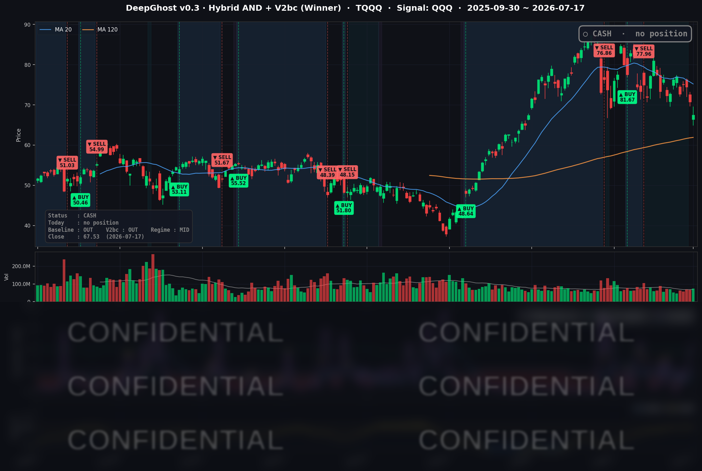

👻 매일 시그널과 히스토리를 홈페이지에서 한눈에 → www.ghostai.co.kr
반도체 하나에 집중되던 조정이 넷플릭스 실적 쇼크와 유가 급등을 만나 시장 전반의 위험회피로 번졌습니다. 기술적으로는 지지선을 지켰지만 다음주 이 지지선을 지키는지 봐야겠습니다. 위험할때 미리 빠지는 능력이 우리 모델의 가장 큰 장점입니다.
📊 오늘의 매매 신호
| 항목 | 내용 |
|---|---|
| 오늘 할 일 | ✅ 아무것도 안 해도 됩니다 |
| 포지션 상태 | 💵 현금 보유 중 (OUT OF POSITION) |
| 현금 보유 기간 | 2026-06-25 ~ 2026-07-17 (22일) |
| TQQQ 종가 | $67.53 (-4.54%) |
지난 6/25 매도 이후 우리는 계속 현금 상태를 유지하고 있습니다. 이날은 나스닥이 전반적으로 밀리며 TQQQ가 하루 -4.54% 급락했지만, 전략은 현금 보유 상태였던 덕에 이 하락을 오늘도 피했습니다. 소나기가 지나고 다시 추세가 회복되면 매수 시그널이 나올 것입니다. 뇌동매매하지 말고 한발 떨어져 기다리면 됩니다.
TQQQ 시그널 — OUT OF POSITION
현재 상태: 현금 보유 중 | 6/25 매도 이후 관망 지속

앞선 이틀(7/15~16)의 하락은 반도체·AI 설비투자 이야기에 집중된 국지적 조정이었습니다. 오늘(7/17)은 그 촉매가 넷플릭스 실적 실망과 유가 급등(중동 긴장)으로 넓어지면서, 매도가 성장주 전반으로 번진 하루였습니다. 시장의 두려움을 재는 변동성 지수가 하루 만에 두 자릿수로 튀었고 투자심리도 공포 구간으로 넘어갔습니다.
전략의 시장 국면 필터는 며칠째 "지금은 변동성이 큰 위험 구간"이라고 판정해 신규 매수를 걸러내 왔습니다. 그 덕에 오늘 TQQQ가 -4.54% 급락하는 동안 전략은 손실 없이 비켜설 수 있었습니다. 참고로 모델의 모든 지표는 위험하다는 신호를 내고 있습니다. 즉, 서두르지 않고 한발 떨어져 관망하는 쪽을 택하고 있습니다.
오늘 미국 시장 — 시황 요약
넷플릭스의 실적 실망과 유가 급등이 겹치며 성장·기술주 전반이 밀린 위험회피 장세였습니다. 다만 낙폭 자체는 나스닥 -1.40% 수준으로, 붕괴적이라기보다 특정 촉매(실적·반도체·유가)에 집중된 조정 성격이 강했습니다.
지수 마감
| 지수 | 종가 | 등락률 |
|---|---|---|
| S&P 500 | 7,457.69 | -1.01% |
| 나스닥 종합 | 25,520.24 | -1.40% |
| 다우존스 | 52,146.42 | -0.77% |
| 러셀 2000 | 2,962.22 | -0.42% |
성장·기술주가 몰린 나스닥(-1.40%)과 QQQ(-1.50%)가 다우(-0.77%)·러셀 2000(-0.42%)보다 크게 밀렸습니다. 대형 기술주의 낙폭이 소형주보다 컸다는 점에서, 이날 매도는 넓은 경기 우려라기보다 AI·반도체 밸류에이션과 개별 실적(넷플릭스)에 집중된 성격이었습니다.
국채 금리 동향
| 만기 | 수익률 | 전일 대비 |
|---|---|---|
| 3개월 (^IRX) | 3.707% | +1.0bp |
| 5년 (^FVX) | 4.273% | -0.9bp |
| 10년 (^TNX) | 4.541% | -2.8bp |
| 30년 (^TYX) | 5.064% | -3.4bp |
어제와 정반대로, 오늘은 중장기 금리가 오히려 내렸습니다. 단기(3개월)만 소폭 올랐을 뿐 5년·10년·30년물은 모두 하락했습니다. 위험자산에서 빠져나온 자금 일부가 장기 국채로 흘러 들어가는 전형적인 안전자산 선호의 흐름입니다. 다시 말해 오늘 주가 하락은 금리 급등이 밸류에이션을 눌러서가 아니라, 반대로 주식에서 발을 뺀 자금이 채권을 사들여 장기 금리를 끌어내린 결과에 가깝습니다. 10년물에서 3개월물을 뺀 장단기 스프레드는 +83.4bp로 곡선은 정상(우상향)을 유지했고 역전은 없어, 이 금리 움직임을 경기침체 신호로 확대 해석할 근거는 약합니다.
연준 발언 & 금리 패스
이날 시장을 움직인 새로운 연준 발언이나 회의 이벤트는 없었습니다(7월 FOMC는 아직 미개최). 직전 6월 회의에서 정책금리를 3.50~3.75%로 동결하며 연말 전망을 다소 매파적으로 유지한 스탠스가 그대로 이어지고 있습니다. 즉 이날 하락은 통화정책 재료가 아니라 실적·섹터·유가 요인이 주도했고, "연내 추가 완화 기대는 제한적"이라는 6월의 기조에서 큰 변화는 없었습니다.
오늘의 핵심 이슈
- 넷플릭스 실적 실망 → 커버리지 최대 낙폭 -7.26%. 2분기 실적 숫자 자체는 시장 예상에 대체로 부합했지만, 3분기 매출 가이던스가 시장 기대(~$13B)를 밑돌았고 시청 데이터 공개를 반기에서 연 1회로 줄인다는 발표가 겹치며 실망 매도가 나왔습니다. 장중 -12%까지 밀렸다가 -7.26%로 마감했습니다. "숫자는 나쁘지 않았는데 왜 급락했나"의 답은 결국 눈높이(가이던스)에 있었습니다.
- 글로벌 반도체·AI 인프라 밸류에이션 조정. 삼성전자 실적을 계기로 촉발된 칩 매도 심리가 이어지며 AI 설비투자의 수익화 시점에 대한 의구심이 부각됐습니다. 다만 앞선 이틀보다 반도체 낙폭 자체는 오히려 완화돼(-0.5--2%대), 매도의 무게중심이 반도체에서 미디어·유가로 옮겨간 흐름이 확인됐습니다.
- 유가 급등에 따른 매크로 부담. 중동 지정학 긴장으로 WTI가 +3.57%, 브렌트가 +4.58% 급등했습니다. 에너지 비용 상승이 인플레이션·마진 우려를 자극하며 위험자산 전반의 심리를 눌렀습니다. 앞선 이틀의 반도체 서사와는 독립된 새 하방 촉매입니다.
변동성 & 투자심리
VIX는 전일 16.73에서 18.77로 하루 만에 +12.19% 급등했습니다. 위험회피 강도가 뚜렷이 커진 것을 확인해 주지만, 절대 수준 18~19는 여전히 역사적 평균(약 20) 부근이라 패닉이라기보다 "경계성 변동성 확대"에 가깝습니다. CNN 공포탐욕 지수도 전일 46대에서 42대로 내려오며 "탐욕"에서 "공포" 구간으로 넘어갔습니다. 지수 하락, 변동성 급등, 심리의 공포 진입, 장기채·금 매수라는 신호가 일관되게 위험회피를 가리켰지만, 낙폭 자체는 붕괴 수준이 아니어서 전반적으로는 "비관 우위" 정도로 정리할 수 있습니다.
매크로 & 원자재
- WTI $81.77 (+3.57%), 브렌트 $88.09 (+4.58%)
- 금 $4,023.00 (+0.94%)
유가와 금이 함께 올랐습니다. 유가는 중동 지정학 프리미엄이, 금은 안전자산 수요가 배경으로, 원자재 시장도 이날의 위험회피 성격을 뒷받침했습니다.
주요 종목 동향
| 종목 | 전일 종가 | 당일 종가 | 등락률 | 비고 |
|---|---|---|---|---|
| QCOM | 170.61 | 171.78 | +0.69% | 방어적 소폭 강세 |
| AAPL | 333.26 | 333.74 | +0.14% | 커버리지 중 상대적 방어, 소폭 강세 |
| MU | 853.20 | 848.95 | -0.50% | 반도체 내 상대적 선방 |
| AVGO | 374.45 | 370.83 | -0.97% | 반도체 매도 속 상대적 선방 |
| AMZN | 249.89 | 247.23 | -1.06% | 지수 대비 선방 |
| MSFT | 401.10 | 393.82 | -1.82% | 대형 소프트웨어 동반 조정 |
| INTC | 96.98 | 95.04 | -2.00% | 반도체 섹터 매도 동조 |
| GOOGL | 354.46 | 346.77 | -2.17% | 성장주 매도 |
| NVDA | 207.40 | 202.81 | -2.21% | 글로벌 반도체 매도·AI 투자 우려 |
| TSLA | 391.06 | 380.84 | -2.61% | EV 약세 |
| META | 664.54 | 646.01 | -2.79% | 광고·미디어 심리 악화 |
| NFLX | 74.35 | 68.95 | -7.26% | 실적·가이던스 실망, 커버리지 최대 낙폭 |
커버리지 12종목 가운데 애플(+0.14%)과 퀄컴(+0.69%)만 소폭 강세였습니다. 실적이 안정적이고 AI 설비투자 노출이 상대적으로 낮은 방어적 종목으로 자금이 옮겨간 결과입니다. 지수가 빠지는 날에도 그 안에서는 돈이 이동한다는 시장의 결을 다시 한번 보여준 하루였습니다.
Ghost.AI — Quantitative AI Investment
Model: DeepGhost v0.3 | Transformer-Based Deep Learning
Coverage: 13 tickers | Updated every trading day after US market close
⚠️ 본 자료는 정보 제공 목적으로만 작성되었으며 투자 권유가 아닙니다. 모든 투자의 책임은 투자자 본인에게 있습니다. 과거 성과가 미래 수익을 보장하지 않습니다.
[유의사항]
- 본 서비스는 불특정 다수를 대상으로 발행되는 단방향 정보 제공 서비스이며, 투자자 개인의 재산 상황·투자 목적·위험 선호도를 반영한 개별 투자 조언이 아닙니다.
- 고스트에이아이 주식회사는 고객과 쌍방향 의사소통(개별 상담, 맞춤형 자문 등)을 제공하지 않습니다.
- 본 콘텐츠는 투자 권유 또는 매매 주문의 청약·청약의 권유에 해당하지 않으며, 최종 투자 판단 및 그에 따른 손익의 책임은 전적으로 투자자 본인에게 있습니다.
고스트에이아이 주식회사